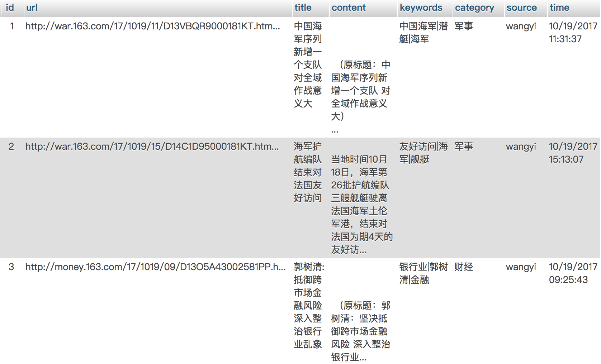

任务需求
信息检索导论课的大作业要求完成一个搜索引擎，以下是搜索引擎的需求。

爬虫系统
表
我主要是爬了网易和新浪两大网站，建了两张表：新闻和新闻评论。
news表
主要是news的url、title(标题)、content(文章内容)、时间

新闻和新闻评论是一对多的关系，新闻评论通过新闻的url和新闻表关联。
索引以外的功能点
查询自动补齐
主要是根据历史搜索先定义好，这里使用了百度的API。
评论褒贬分析
- 方案1：使用朴素贝叶斯分类器。
- 方案2：使用一个三层的神经网络，①Embedding层②LSTM③全连接的sigmoid层。
相关新闻推荐
- 1.对所有新闻的content先TF-IDF。
- 2.归一化。
- 3.聚类。
- 4.在每个簇中使用余弦相似度，对每个新闻找出最近的K个新闻。
相关搜索推荐
- 对于搜索结果是一个词的，可以使用word2vec，找出距离最近的词向量。比如说搜索詹姆斯，会出来科比、JR史密斯等等。
- 对于一般的query，对已有的用户query做索引，找出评分高的。
由于没有语料库，这里实现直接通过webkit渲染js的方式来爬取百度的相关搜索。
搭建ElasticSearch
安装ES
这里首先安装JDK，然后安装ElasticSearch-6.0.0版本。
把ElasticSearch的bin目录添加到PATH中。(以下为linux命令)
1
| export PATH=$HOME/ProgramFiles/elasticsearch-6.0.0/bin:${PATH}
|
使用elasticsearch-analysis-ik
ElasticSearch自带的中文分词做的不好，所以使用到ik的一个插件。使用以下命令安装即可。
1
| elasticsearch-plugin install https://github.com/medcl/elasticsearch-analysis-ik/releases/download/v6.0.0/elasticsearch-analysis-ik-6.0.0.zip
|
开启ElasticSearch服务
在命令行中输入elasticsearch即可开启服务。
索引
索引建立
对title和content字段建立分词索引。
1
2
3
4
5
6
7
8
9
10
11
12
13
14
15
16
17
18
19
20
21
22
23
24
25
26
27
28
29
30
31
32
33
34
35
36
37
38
39
40
41
42
43
44
45
46
47
48
49
| from elasticsearch import Elasticsearch
from db_model import DBSession, News, Comment
import time
es = Elasticsearch()
index_mappings = {
"mappings": {
"news": {
"properties": {
"title": {
"type": "text",
"analyzer": "ik_max_word",
"search_analyzer": "ik_max_word"
},
"content": {
"type": "text",
"analyzer": "ik_max_word",
"search_analyzer": "ik_max_word"
},
"timestamp": {
"type": "integer"
}
}
},
}
}
if es.indices.exists(index='news_index') is not True:
print "create news_index"
es.indices.create(index='news_index', body=index_mappings)
def get_news():
session = DBSession()
newses = session.query(News).filter(News.source == source).all()
for news in newses:
yield news
session.close()
for i, news in enumerate(get_news()):
doc = {
"id": news.id,
"title": news.title,
"timestamp": time.mktime(time.strptime(news.time, '%m/%d/%Y %H:%M:%S')),
"content": news.content,
}
res = es.index(index="news_index", doc_type="news", id=news.id, body=doc)
print res
|
索引查找
查找title和content这两个字段，并显示snippet（对于搜索关键词标红），这里只显示10条。
1
2
3
4
5
6
7
8
9
10
11
12
13
14
15
16
17
18
| def search(query):
query_contains = {
'query': {
'multi_match': {
'query': query,
"fields": ["title", "content"]
}
},
"highlight": {
"fields": {
"content": {},
"title": {}
}
}
}
es = Elasticsearch()
searched = es.search("news_index", doc_type="news", body=query_contains, size=10)
return json.dumps(searched)
|
索引分页
相比索引查找，加一个offset。
1
2
3
4
5
6
7
8
9
10
11
12
13
14
15
16
17
18
19
| def search(query, page=1):
offset = (page - 1) * 10
query_contains = {
'query': {
'multi_match': {
'query': query,
"fields": ["title", "content"]
}
},
"highlight": {
"fields": {
"content": {},
"title": {}
}
}
}
es = Elasticsearch()
searched = es.search("news_index", doc_type="news", body=query_contains, size=10, from_=offset)
return json.dumps(searched)
|
索引排序
添加sort字段。
1
2
3
4
5
6
7
8
9
10
11
12
13
14
15
16
17
18
19
20
21
22
23
24
25
26
| sort_list = {
"0": [],
"1": ["timestamp:desc"],
}
def search(query, page=1, sort=[]):
offset = (page - 1) * 10
query_contains = {
'query': {
'multi_match': {
'query': query,
"fields": ["title", "content"]
}
},
"highlight": {
"fields": {
"content": {},
"title": {}
}
}
}
es = Elasticsearch()
searched = es.search("news_index", doc_type="news", body=query_contains, size=10, from_=offset,
sort=sort)
return json.dumps(searched)
search("詹姆斯", 1, sort_list[1])
|
效果